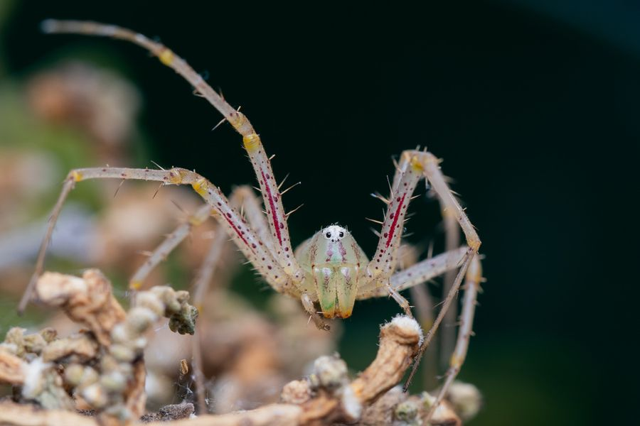

سلسلة تصوير
توثيق التنوع البيولوجي في الإمارات
سجل فوتوغرافي متنامٍ للحشرات والعناكب والكائنات الصغيرة التي تعيش في أنحاء الإمارات، من نباتات الحدائق إلى شجيرات الصحراء. كل صورة تُظهر الكائن في بيئته الطبيعية، وبمقياس لا تلحظه العين عادةً. هذا التوثيق المحلي يحوّل التنوع البيولوجي في الدولة إلى أرشيف بصري متاح للجميع.
تصوير ميدانيسجلات الكائنات
شاهد المعرض →


